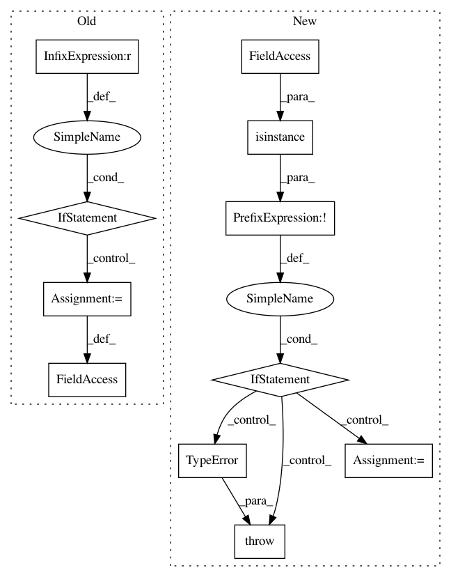

6373c706615bc94c0a1e7fc564b3d18c3d342d91,python/ray/serve/api.py,,create_backend,#Any#Any#,208
Before Change
type(func_or_class)))
// Make sure the batch size is correct.
should_accept_batch = backend_config.max_batch_size is not None
if should_accept_batch and not _backend_accept_batch(func_or_class):
raise batch_annotation_not_found
if _backend_accept_batch(func_or_class):
backend_config.has_accept_batch_annotation = True
retry_actor_failures(master_actor.create_backend, backend_tag,
backend_config, func_or_class, actor_init_args)
After Change
if config is None:
config = {}
if not isinstance(config, dict):
raise TypeError("config must be a dictionary.")
replica_config = ReplicaConfig(
func_or_class, *actor_init_args, ray_actor_options=ray_actor_options)
backend_config = BackendConfig(config, replica_config.accepts_batches)
retry_actor_failures(master_actor.create_backend, backend_tag,
backend_config, replica_config)
In pattern: SUPERPATTERN
Frequency: 3
Non-data size: 11
Instances
Project Name: ray-project/ray
Commit Name: 6373c706615bc94c0a1e7fc564b3d18c3d342d91
Time: 2020-04-30
Author: ed.nmi.oakes@gmail.com
File Name: python/ray/serve/api.py
Class Name:
Method Name: create_backend
Project Name: NVIDIA/OpenSeq2Seq
Commit Name: 9a76bb5272c3f8662b266410c0c5b0dbce3ec025
Time: 2018-08-20
Author: jasoli@nvidia.com
File Name: open_seq2seq/parts/rnns/attention_wrapper.py
Class Name: LocationSensitiveAttention
Method Name: __init__
Project Name: PetrochukM/PyTorch-NLP
Commit Name: bb9335bbc981c0541e37a875d79d0ef419008574
Time: 2018-03-25
Author: petrochukm@gmail.com
File Name: torchnlp/text_encoders/subword_encoder.py
Class Name: SubwordEncoder
Method Name: __init__